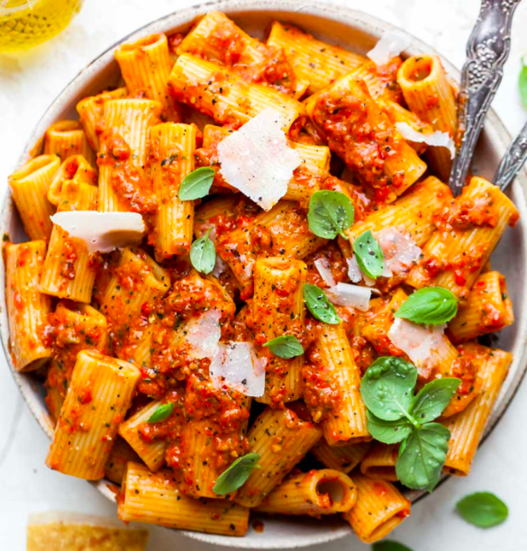

Red Pesto Pasta

Description
This may be the easiest and most delicious homemade pasta recipe in my current arsenal. I know we are all familiar with classic green pesto, but have you ever heard of RED PESTO? Mind blowing, I know.
In my opinion, red pesto offers way more complexity and oomph than green. I find most green pestos to just taste very earthy with garlicky undertones. Red pesto, however, is incredibly bright with rich notes of umami. It’s delicious on its own, or paired with just about any protein: grilled chicken, shrimp, steak, or meatballs.
Ingredients
- 1 lb. dry pasta of choice
- 1 roasted red pepper
- 1 cup fresh basil leaves
- 1/3 cup sun-dried tomatoes packed in oil, drained
- 1/4 cup pitted green olives
- 3 Tbsp. pine nuts
- 3 Tbsp. grated Parmesan cheese
- 2 garlic cloves
- Kosher salt
- 1/2 tsp. crushed red pepper flakes
- 1/2 tsp. black pepper
- 1/3 cup extra-virgin olive oil
Steps
- Cook pasta in salted water until al dente. Reserve 1 cup pasta cooking water prior to draining.
- While pasta cooks, combine roasted red pepper, sun-dried tomatoes, basil, green olives, pine nuts, Parmesan, garlic, red pepper flakes, salt, and pepper in a food processor. Blend until smooth while gradually streaming in olive oil.
- Drain pasta and return to pot. Add pesto and 1/2 cup reserved pasta water; stir continuously until pesto begins clinging to noodles. Add more pasta water as needed to achieve desired consistency.
- Garnish pasta with additional Parmesan cheese and basil, and serve with sauteed veggies or protein of choice, if desired.